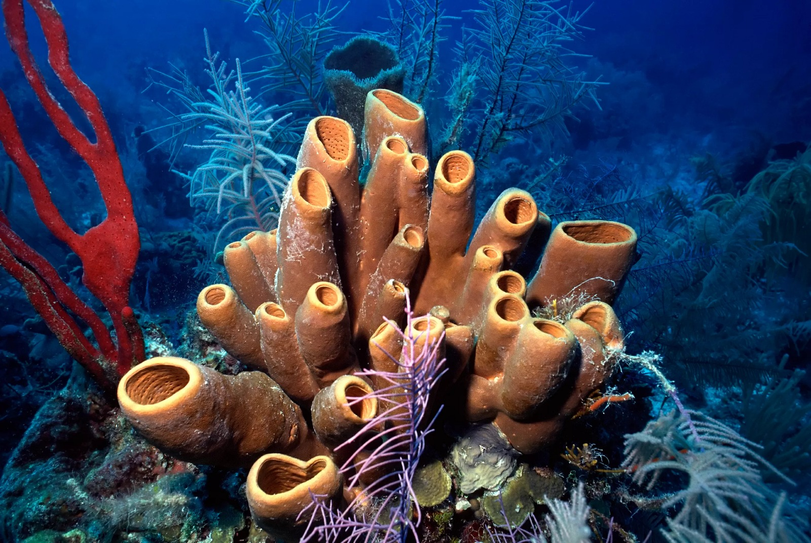
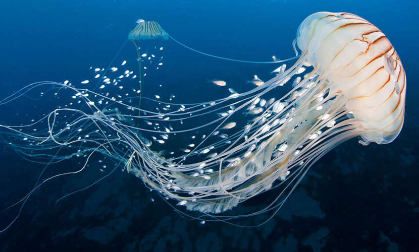
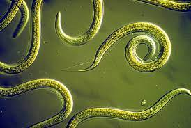
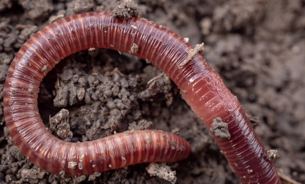
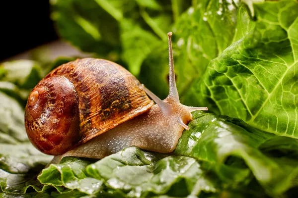
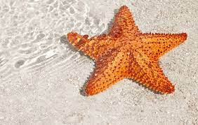
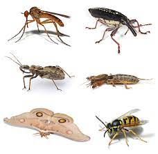
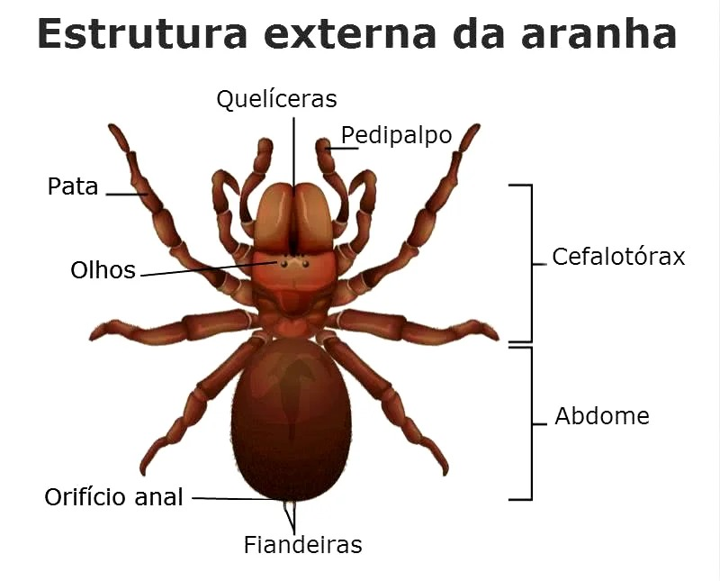
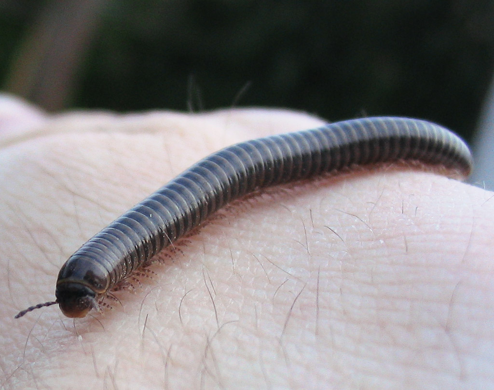
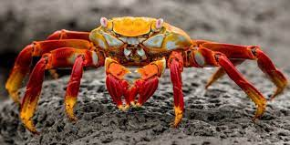

Animais invertebrados caracterizam-se pela ausência de uma coluna vertebral e de crânio. Como exemplo podemos citar os insetos, crustáceos e anelídeos. "Os animais invertebrados são aqueles animais que não possuem coluna vertebral e crânio. Vale salientar que a classificação dos animais em vertebrados e invertebrados é completamente artificial, uma vez que apenas uma característica não é suficiente para classificar todo o reino em dois grupos apenas. Os invertebrados são complexos e muitos estão mais relacionados com vertebrados do que com outros invertebrados. A seguir, retrataremos melhor os grupos que podem ser assim classificados."
Os invertebrados estão divididos em, aproximadamente, 33 filos diferentes. Entretanto, na maioria dos livros didáticos, observamos a referência de apenas oito deles. Os oito filos de invertebrados mais estudados são:
Os poríferos, popularmente chamados de esponjas-do-mar, são conhecidos por serem invertebrados aquáticos e que vivem grudados em algum tipo de substrato. Sua principal característica é a presença de poros pelo corpo, daí surge seu nome. Ele pode apresentar vários formatos, tamanhos e cores, dependendo da qualidade da água e das substâncias que ele absorve. Os peixes respiram por brânquias e são equipados com “linhas laterais”, redes de receptores interconectados ao longo da cabeça e do corpo que detectam correntes de água e até eletricidade.
Os cnidários, também conhecidos como Ctenóforos, são organismos pluricelulares e em sua maioria aquáticos e marinhos. Eles possuem um tipo específico de célula nos tentáculos, que contém um filamento com espinho e um líquido urticante. Este espinho possibilita que o animal injete uma substância tóxica na presa ou ainda como forma de defesa. Nos seres humanos costuma causar queimaduras. Os exemplos mais populares deste filo são as águas-vivas e anêmonas-do-mar.
Os platelmintos são os vermes com corpo achatado e pouca espessura. São animais que se desenvolvem na água, porém apresentam vida livre, ou seja, podem viver na terra. Este animal invertebrado possui poucos centímetros de comprimento, sendo que na cabeça estão localizadas as estruturas sensoriais. Apresenta um sistema digestivo incompleto. Os exemplos mais comuns deste tipo de animal invertebrado são a tênia e esquistossomos.

Os nematelmintos, ou nematódeos, são os vermes com corpo cilíndrico. Seu desenvolvimento se dá na água e podem viver em terra, desde que o solo seja úmido. É conhecido por ser o transmissor de diferentes doenças, como ascaridíase, amarelão, elefantíase e bicho-geográfico. O exemplo mais comum de nematelminto é a lombriga.
Os anelídeos são os vermes divididos em "anéis", como as minhocas e os sanguessugas. Sua principal característica é o corpo mole, alongado, cilíndrico e segmentado, parecendo uma divisão por anéis. Este tipo de animal invertebrado pode ser encontrado tanto em água doce quanto em água salgada, ou ainda em solos úmidos.
Os moluscos são animais invertebrados que apresentam corpo mole. Dependendo da espécie podem ser envoltos por uma concha, que exercem a função de proteção do corpo e para evitar perda de água. Podem ser encontrados em ambientes aquáticos marinhos, de água doce ou em solo úmido. Como exemplo de moluscos podemos citar polvos, lulas, lesmas, caramujos, ostras, mariscos e mexilhões.
Os equinodermos são animais invertebrados exclusivamente marinhos. Seu corpo é simétrico e suas partes são distribuídas em forma de circunferência. O formato e tamanho são variados, vivem isoladamente e fixos a um substrato. Alguns exemplos de equinodermos são os pepinos-do-mar, estrelas-do-mar e ouriços-do-mar.
Os artrópodes são um filo muito diverso, representam cerca de 99% do reino animal. Suas principais características são as patas articuladas, o exoesqueleto (esqueleto externo) e corpo segmentado. São divididos nos diferentes grupos: insetos, aracnídeos, miriápodes e crustáceos
Os insetos representam o grupo com maior diversidade entre os animais, possuindo cerca de 900 mil espécies. Seu corpo possui 3 pares de patas, 2 pares de antenas e 1 ou 2 pares de asas. Os animais que compõem o grupo dos insetos são: cigarras, borboletas, gafanhotos, percevejos, besouros, formigas, abelhas, libélulas, cupins, baratas, moscas, traças, pernilongos, pulgas, baratas.
Os aracnídeos são os animais invertebrados que representam as aranhas, escorpiões, ácaros, carrapatos. Eles não apresentam antenas e mandíbulas, porém possuem quelíceras, que nos escorpiões são pinças preensoras e nas aranhas são os ferrões. Além disso, os aracnídeos possuem 4 pares de patas.
Os miriápodes são também conhecidos como unirremes, pois não apresentam apêndices ramificados. Seu corpo é formado por um par de antenas, cabeça e tronco alongados, sua mandíbula não é articulada e possui diversas pernas. São animais exclusivamente terrestres, não havendo espécies que vivem em ambiente aquático. Como exemplo de miriápodes, destacam-se os piolhos de cobra, as centopeias e as lacraias.
Os crustáceos são animais invertebrados que vivem, em sua maioria, em ambiente aquático marinho ou de água doce. Desempenham um importante papel ecológico, formando a base da cadeia alimentar nos ecossistemas marinhos. Seu corpo é segmentado, possui 2 pares de antenas que desempenham função sensorial e de equilíbrio, mandíbulas e maxilas, além de apêndices locomotores. Como exemplos de crustáceos destacam-se os caranguejos, lagostas, camarões, siris e cracas.
A maioria dos animais do planeta são invertebrados, representando 97% das espécies, o que dá um total de cerca de 1,5 milhão de espécies. No processo de evolução, os cientistas não tem uma conclusão sobre como os invertebrados surgiram. Duas teorias são mais populares, sendo uma considerando que foi originário de um ancestral unicelular primitivo; já a outra teoria é que eles tiveram diferentes origens.